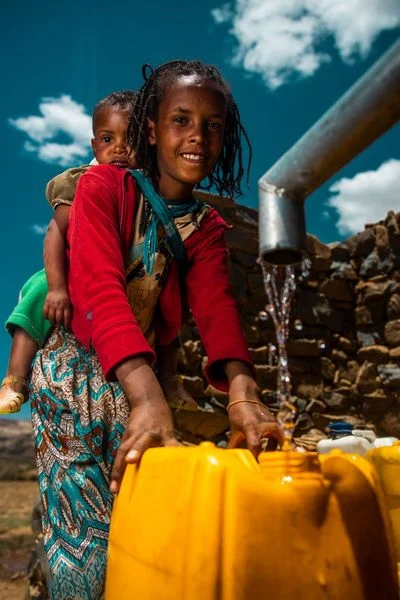

Small donation.
Life-changing
impact. Give clean water

A little generosity goes a long way
Your part in a bigger story.
Clean water can open the door to better health, more time for school, and new opportunities. Here’s where you come in.
- 01
Start with what you can.
Choose a gift that works for your budget. Every contribution joins a community working toward clean water for everyone.
- 02
Support water projects.
charity: water directs 100% of public donations to clean water projects. Private donors cover operating costs.
- 03
See the work.
Explore charity: water’s projects and learn how local partners help bring lasting water access to communities.
Explore the journey
Small donation. Real possibility.
Make your next
small act count.
A meaningful contribution starts with you. Give directly through charity: water’s secure donation page.
Give clean waterYou’ll continue to charitywater.org to choose your amount and complete your gift.
Bring your curiosity
One question. A new perspective.
Test what you’ve learned about the mission.
What percentage of public donations funds clean water projects?
Choose an answer to find out.
Our mission, together
Clean water
changes everything.
charity: water is a nonprofit organization working to bring clean and safe water to people around the world. This student-designed page invites you to learn, participate, and support that mission.
Meet charity: water ↗Your questions, answered.
Where does my donation go?
100% of public donations to charity: water fund clean water projects. A separate group of private donors funds operating expenses. Read about the model.
Can I help beyond donating?
Yes. You can learn about the water crisis, share the mission, and explore fundraising through charity: water. Create an official account to get started.
Is this an official donation website?
This is a student landing page inspired by charity: water. All donation and account links take you to the official charitywater.org website. This page does not collect payments or account details.